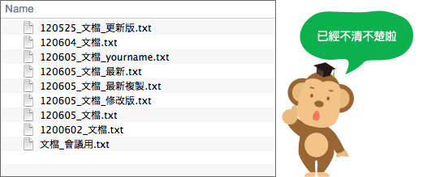
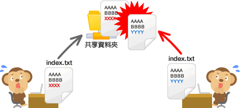
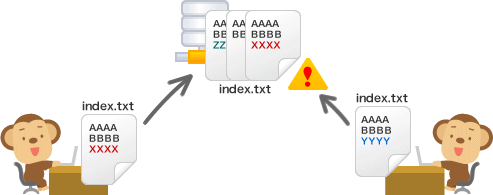

Git的基本介紹
初次見面。我是博多出生生長在Git的「猴子老師」。今天我們要來一起學習版本控制管理系統「Git」哦。
要把檔案恢復到編輯前的狀態，大家都是怎麼做的呢？
最簡單的方法就是先複製編輯前的檔案，使用這個方法時通常都會在檔案名稱或目錄名稱上添加編輯的日期。但是，每次編輯檔案都要複製非常的麻煩，也很容易出錯。

像上面的例子那樣毫無規則的命名的話，就沒有辦法區別那一個檔案是最新的了。如果是組群共享操作的檔案要加上編輯者的名字，具體進行了什麼樣的更改也不容易知道了。
而且，組群共享的檔案，如果有兩個人同時進行編輯的話，先進行編輯的人的修改內容會被覆蓋，相信大家都有這樣的經歷。

Git的版本控制系統就是為了解決這樣的問題而開發的。
使用Git版本控制系統
Git為分散式版本控制系統，是為了更好管理Linux內核而開發的。
Git可以把檔案的狀態作為更新歷史記錄保存起來。因此可以把編輯過的檔案復原到以前的狀態，也可以顯示編輯過內容的差異。
而且，當有人想將編輯過的舊檔案上傳到伺服器、覆蓋其他人的最新檔案時，系統會發出警告，因此可以避免在無意中覆蓋他人的編輯內容。

在Git管理檔案的話，更新歷史會保存在Git。所以不需要複製備用的檔案啦。